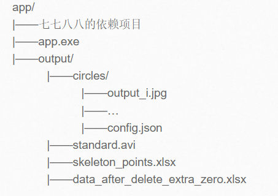
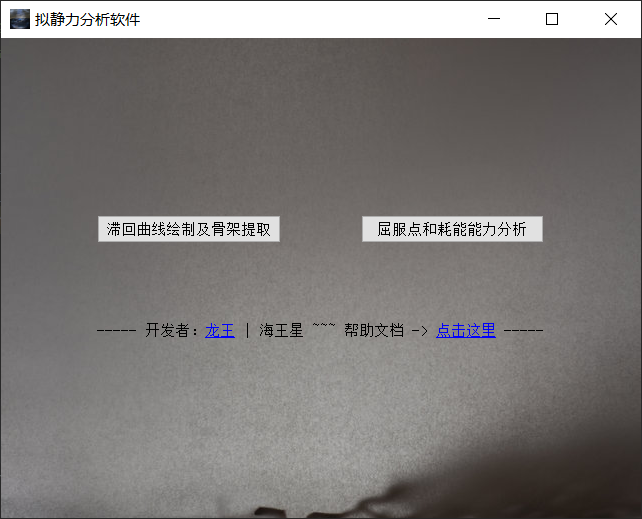
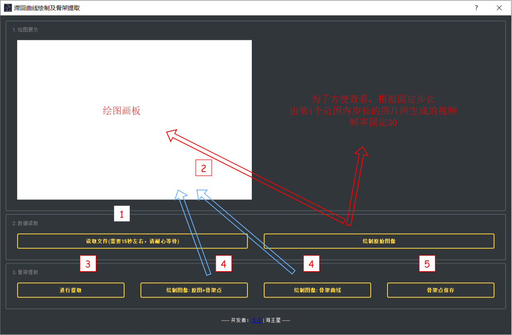
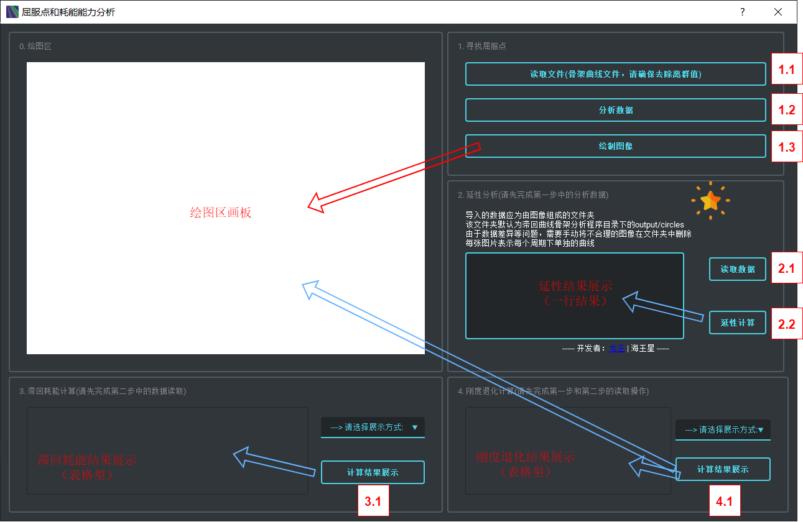

本程序的底层框架采用PyQt5自主编写, 不放出源代码, 但是如果你想要的话可以说明来意, 我会酌情考虑。
主要服务目标关键词为：抗震分析、拟静力试验、骨架曲线。
龙王在实习的某一天, 因为工作的某些缘故, 突发奇想, 做了一点反编译的措施。如果您是大佬, 那当我没说。不过既然您都反汇编了, 那请您给我的代码做个Review再走呗。
另外, 程序里面是夹带了一点私货的(不是那种, 会读你数据的私货, 我根本都不是做这个的也没那个兴趣)。指数据导入特定格式的时候, 会有防伪的弹出框。
欢迎所有的bug反馈, 尤其是在弹出特殊报错框的时候, 前提是你的步骤是对的。
一般可能会发生的错误, 例如数据没导入就进行分析, 导入数据格式不一致, 都进行了弹出提示框的对应。此外任何步骤顺利进行完之后都会有相应的提示。
但是毕竟Bug千奇百怪, 我的能力也有限, 因此软件底层加入了python的traceback机制, 用以完全掌握报错的信息和来源。 如果你在运行软件的过程中, 报错框为红色且一堆英文。那么大概说明这类报错属于比较特殊的报错, 且一般于数据本身存在关系, 包括但不限于文件路径是中文, 除数为0等等。
如果你有代码基础, 看得懂或者知道如何搜索这些报错的解决方法, 那么最好。如果无法解决, 可以通过联系方式向我进行反馈。
程序的目录脑图如下图所示:
所有文件的路径(绝对路径)不能有中文和特殊符号, 否则一定会报错
如下图所示
点就完事儿
该程序的主要流程是: 导入原始数据文件, 生成骨架曲线并导出。
提示, 如果你的数据是文本文件且主要数据部分数据之间都是逗号隔开的形式, 可以通过直接更改后缀的形式强制转化为.csv
注意, 这里所导入的文件, 不能有表头。很多朋友喜欢把excel表的第一行写上表头, 例如：
| ... | ... |
| ... | ... |
| ... | ... |
请把表头的starin和stress等均删除, 且只许为两列的格式, 第一列为x(应变),第二列为y(应力)
此步骤是整个流程中最需要时间的地方, 请耐心等待(亲测, 15000组点大概需要15s的时间)
最后会生成两个文件和一个文件夹, 分别为circles(文件夹), standard.avi, data_after_delete_extra_zero.xlsx
其中circles文件夹是第二个程序分析的主要数据来源; standard.avi是视频文件; 最后一个excel表格是抛去原数据中所有多余的原点所得到的数据, 供用户检查所用。
这部分点击即可, 左边生成原数据的折线图, 右边生成对应的视频展示(循环无停止)
点击即可, 运行完成后会生成对应的骨架点数据并保存在软件内部
左侧是原数据折线图+骨架点的散点图；右侧是骨架点的折线图。直接在绘图区显示
会在软件目录下的output文件夹下生成skeleton_points.xlsx文件
该程序的主要流程是: 导入骨架曲线文件和周期图像及对应信息文件夹, 进行分析并产生对应结果。
请注意：一定要手动去除明显的离群点。 如果你不知道离群点大概处于哪个位置, 你可以先用原始的骨架点文件在这里进行分析并观察绘图结果
首先介绍一下该文件夹里的文件性质, 共分为两类：
output_i_.png, 表示原数据第i+1个周期内的折线图
config.json, 表示上述所有数据的相应信息
有些朋友可能就会存在疑惑了：你这里就只有这些图片, 数据也不互通(是的, 子软件的底层数据是不互通的), json文件也这么小, 咋算围起来的面积和比值等结果啊。 这里采用了一种很特殊的方法来计算积分面积(在不减少精度的前提下, 目的是为了减小依赖库的使用和潜在的报错问题)。 如果有曾经打包过python程序的经验, 可能聪明的你已经猜出来了。
(如界面上所说明的一样)请注意：由于数据本身存在的问题, 提取的周期并不一定每一个都是合乎情理的。 因此在进行导入数据并分析之前, 需要用户自己进入app/output/circles文件夹内, 将不符合客观事实的图片直接删除。 请勿修改config.json文件里的任何东西
共有四种模式, '单圈滞回耗能', '累积滞回耗能', '能量耗散系数', '等效粘滞阻尼耗散系数'
点击结果展示按钮, 左侧文本栏会生成相应的表格
共有三种模式, '割线刚度(单向)', '割线刚度(双向)', '强度退化系数'
点击结果展示按钮, 左侧文本栏会生成相应的表格, 且绘图区会生成图像并标出三类关键点和对应的数值（峰值点, 屈服点, 极限点）
本软件全部由我和另一位同学独自完成(暂且称为X和T), 其中理论部分由T负责, 代码部分由X负责。 想到做这个起因是T从某鱼购买了一个, 15-16年左右一个土木博士写的基于tkinter的抗震分析软件(其实也没明确说是用tk写的, 只不过那个界面风格是真的像)。 然后跟X聊到了这个事情, 问X说咱能不能自己写一个, 于是就有了这款软件。 代码量1000多行吧, 手输Qt Code(主要也是Python写的方便点, 要是用C++写肯定就要用Creator)。 编写的过程还算顺利, 希望大家用的顺利, 多多批评。
谢谢 / Thank you for all support / ありがとうございます